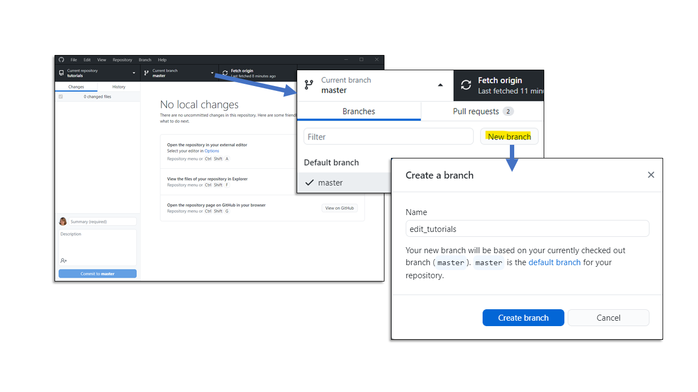
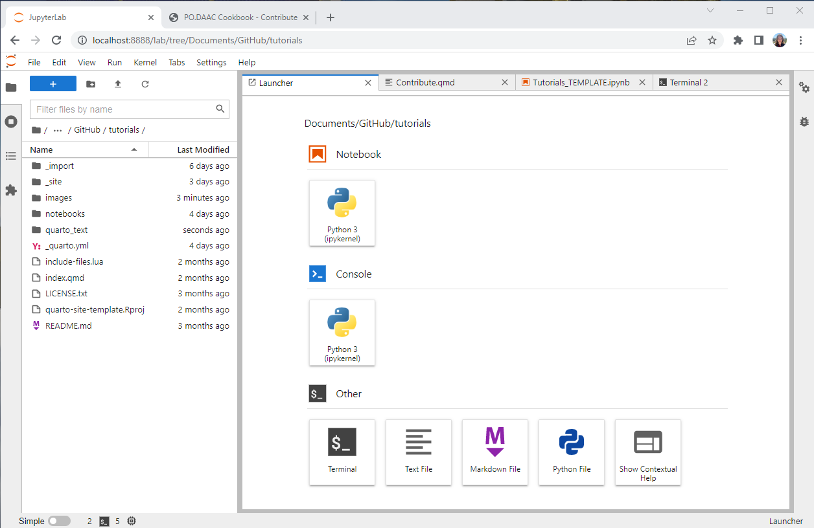
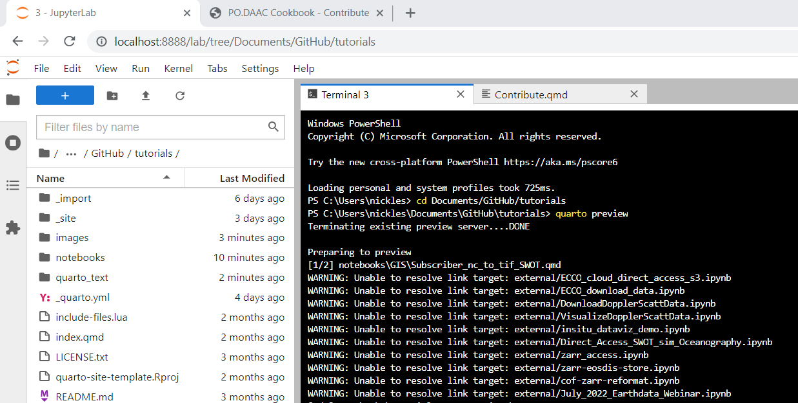
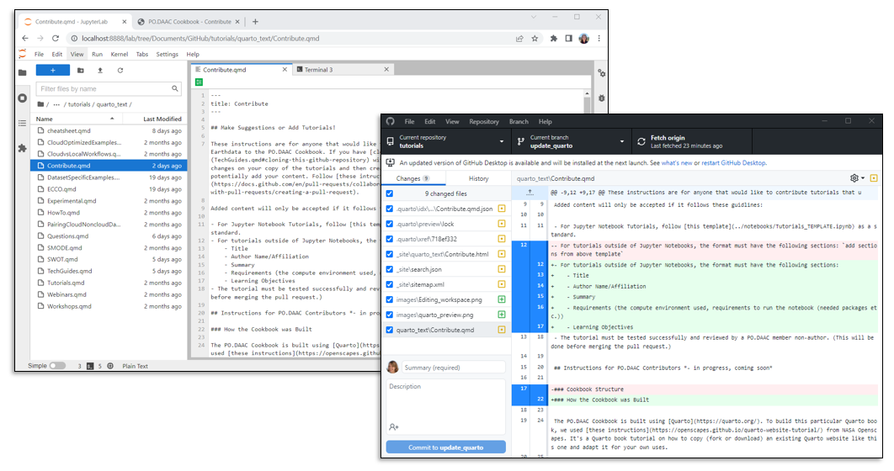
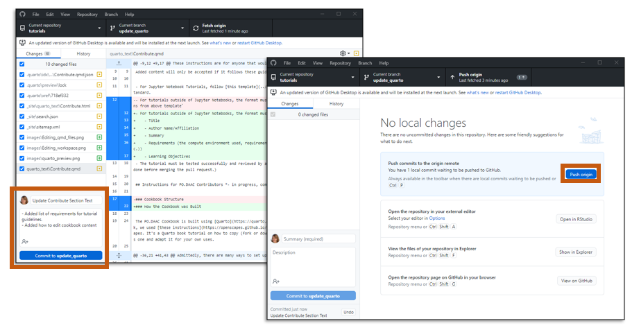
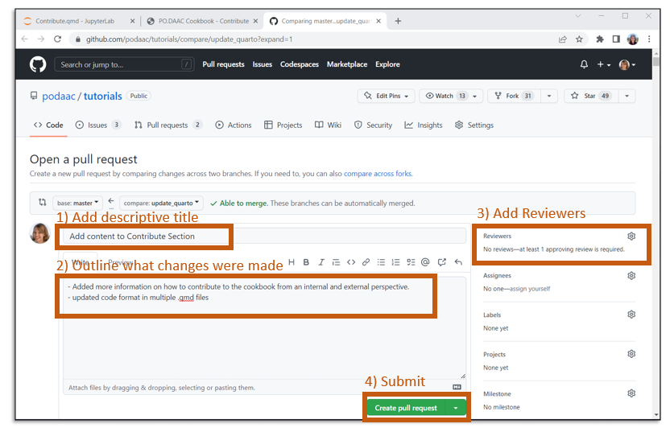
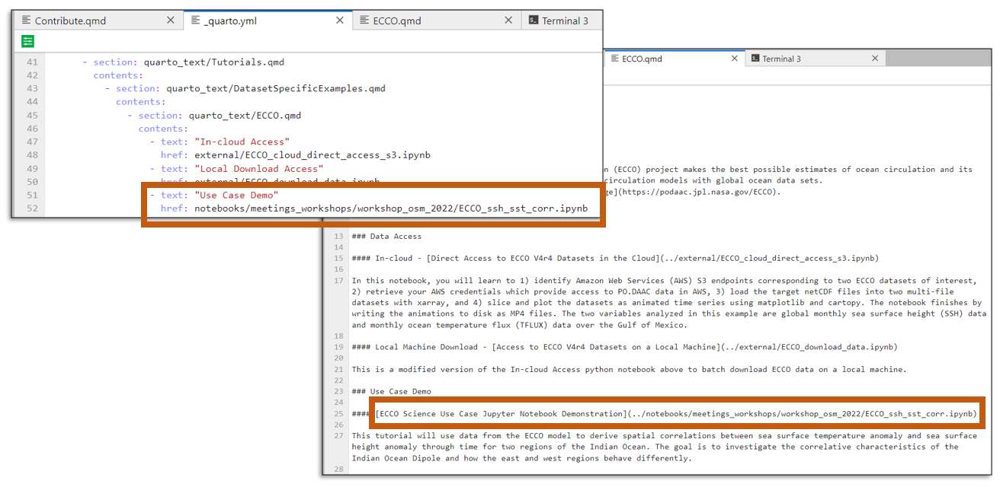

Contribute
Make Suggestions or Add Tutorials!
These instructions are for anyone that would like to contribute tutorials that utilize (in part) NASA Earthdata to the PO.DAAC Cookbook. If you have cloned the PO.DAAC tutorials GitHub repository with all of the PO.DAAC Cookbook Notebooks, you can make changes on your copy of the tutorials and then create a pull request that will be reviewed by our team to potentially add your content. Follow these intructions on how to create a pull request in GitHub. If adding a new tutorial, within the Pull Request, state the section of the Cookbook you think your content would fit best and a member of PO.DAAC may link the tutorial so it renders within the Cookbook.
Added content will only be accepted if it follows these guidlines:
- For Jupyter Notebook Tutorials, follow this template as a standard.
- For tutorials outside of Jupyter Notebooks, the format must have the following sections:
- Title
- Author Name/Affiliation
- Summary
- Requirements (the compute environment used, requirements to run the notebook (needed packages etc.))
- Learning Objectives
- The tutorial must be tested successfully and reviewed by a PO.DAAC member non-author. (This will be done before merging the pull request.)
Instructions for PO.DAAC Contributors
How the Cookbook was Built
The PO.DAAC Cookbook is built using Quarto. To build this particular Quarto book, we used these instructions from NASA Openscapes. It’s a Quarto book tutorial on how to copy (fork or download) an existing Quarto website like this one and adapt it for your own uses.
Setting up your Work Station
Admittedly, there are many ways to set up your work station to effectively accomplish contributing to or editing the PO.DAAC Cookbook quarto website. Steps 1, 2, 4, and 6 are universal to edit the cookbook, but steps 3 and 5 can have variations. The following is a method we have found to be helpful:
1. Creat a GitHub Account - If you do not have one already, create a GitHub account here: https://github.com/.
2. Join a team on the podaac repository - Once you have a GitHub account, in the podaac repository, request to join the PO.DAAC team that best suits your position here. This will give you the permissions required to contribute as a PO.DAAC Member.
3. Set Up your Coding Workspace - On a local machine, I tend to deploy Jupyter Lab (where I do most of my coding) from Anaconda Navigator. RStudio, VS Code, etc. could also work, depending on which you prefer. The workflow would also work on a cloud environment, where I also tend to use the Jupyter Lab interface.
4. Install Quarto - download and install Quarto’s latest version here.
5. Pick your Prefered Method to Interface with GitHub in your Workspace - GitHub Desktop makes it easy for me to track my changes and create Pull Requests without needing to remember commands in a the command line interface. If you prefer to use the command line, this is a comprehensive and maintained list of git commands that may be useful.
6. Clone the podaac/tutorials GitHub Repository - Instructions to do this are in the Tech Guides Section of this Cookbook. If using GitHub Desktop, say no when it asks you if you would like to fork the repository. A fork creates a completely independent copy of the repository while a clone creates a linked copy that will continue to synchronize with the tutorials repository.
If you’ve completed the above, you should have all the necessary ingredients to contribute to the PO.DAAC Cookbook!
Tutorials Repository Organization
Each chapter in our Cookbook is a separate .qmd markdown file within the quarto_text directory. The notebooks directory holds all of our internal tutorials that get rendered in the Cookbook. images contains all figures embedded within the Cookbook files.
The Cookbook structure (i.e. the order of sections and chapters) is determined in the _quarto.yml file in the root directory. We can shuffle chapter order by editing the _quarto.yml file, and add new chapters by adding to the _quarto.yml and creating a new file in the appropriate sub-directory that is indicated in _quarto.yml.
How to Edit Cookbook Content
1. Create a New Branch in GitHub - In a GitHub repository, the main source of code for that repo is deployed in what is called the “Master” branch. This is the branch that the PO.DAAC Cookbook is rendered from. To edit, creating a new branch is important so changes are not overwritten on the master branch if another individual is working on the same file as you. It helps to have your own branch to work on (named however you like) to make changes and then merge those changes with the master branch after changes are done. After merging, it is common practice to delete the branch you created. I like to create a new branch from GitHub Desktop like so:

2. Navigate to the tutorials Folder in your Coding Workspace - once you’ve created a new branch, any code you modify in your coding workspace from the repository you cloned should have tracked changes in your new branch. You can open any file in the tutorials folder and start editing! Here is what my Jupyter Lab workspace looks like:

3. Tip for Previewing Changes in the Cookbook - To implement changes in the actual Cookbook, usually those changes need to be committed to your new branch and pulled into the master branch using a Pull Request (outlined below). Most of the time though, it is nice to see what your changes would look like visually in the Cookbook before you commit to them. To open up a preview page of the cookbook from your workspace, open up the terminal and change the directory to your tutorials folder location. Once there, type in quarto preview and another tab should open up in your browser that changes every time you save a change to your files. Here is a screenshot of my terminal opening the preview session:

Note: the warnings about external files are fine. We do not host the external files in our repo, but link to them from other repos around GitHub, so they will not be rendered in the preview session. They will render in the actual Cookbook when your branch is merged with the master branch.
4. Open the File you Wish to Edit - Most text within the Cookbook can be found in a .qmd file within the quarto_text folder
5. Make Edits - GitHub should track your changes automatically. For example below, I have opened the ‘Contribute.qmd’ file in my Jupyter Lab and in the GitHub Desktop application, it shows all of the changes I have made in green and the old version in red. Here, I changed the text describing tutorial guidelines. Here is a helpful guide for Markdown Basics in Quarto.

6. Commit Changes to your Branch and Push to Origin - I like to use GitHub Desktop for this, but you can also use the terminal using git commands.

7. Create a Pull Request to Merge your Branch with the Master Branch - From the GitHub Desktop, you can then select “Create Pull Request” and it should open a browser window taking you to the tutorials repository in GitHub. In that browser window, if the information is not already populated from your commit, Add a descriptive title, outline any changes made, add reviewers within PO.DAAC that you think would be able to review your notebook, and then press “Create pull request.” A reviewer will look over your changes and either give feedback on improvements to be made before merging is enabled or accept the changes and merge your branch into the master branch.

8. Delete your Branch after Merge is Complete - it is common practice to delete old branches and start again with new branches for new edits.
How to Add Tutorials and Display them in the Cookbook
Adding tutorials to the podaac/tutorials GitHub repository as a PO.DAAC Contributor should follow the same instructions as those outside of PO.DAAC. See above.
After a tutorial has been added to the repository, however, in order for it to display in the Cookbook, a couple more files need to be updated:
1. The _quarto.yml file - This file is essentially the table of contents of the PO.DAAC Cookbook, telling quarto where to place a tutorial or file in the Cookbook. Write the path of the added tutorial in the appropriate desired location.
2. The specific landing page .qmd file - This is the .qmd file that houses the section the tutorial will be in. I usually link the added tutorial on this homepage for the section.
For Example, here is a screenshot of the current ECCO portion of the _quarto.yml file and the ECCO.qmd file. The Use Case Demo notebook is hightlighted in both places it is linked. The notebook sits under multiple sections, first and formost, the “Tutorials” Section, and within that, the “Dataset Specific Examples” Section and finally, the “ECCO” page. In the .yml file, we gave the tutorial a title after the “text:” portion, which will be visible on the left hand side table of contents in the rendered Cookbook. Underneath the title, the notebook GitHub path is written out after “href:” as shown. The ECCO.qmd file hosts the information regarding the available ECCO tutorials, and somewhere within this page, the new tutorial should be linked. Note: this link may have a slightly different path starting point than the .yml file because the .qmd files are within a subfolder of the tutorials repo. You will likely need to add a “../” before the path in the .qmd file.

Guidance for Dataset Specific Tutorials Section
Once a couple tutorials have been created for a particular mission, it is useful to add a page under the “Dataset Specific Tutorials” Section in the Cookbook for the tutorials. To add one, create a .qmd file in the quarto_text folder with the mission name as the file name. A good example for this would be the ECCO.qmd file or the SWOT.qmd file. Each Dataset Specific Landing Page should have the following sections:
- Title of Mission
- Background - a brief over view of the mission and products that links to the PO.DAAC webpage for the mission
- Data Resources & Tutorials - this section can have sub-sections grouping resources)
- Additional Resources - links to workshops or other useful materials relating to the mission)
How to Link to Notebook Tutorials Hosted in Other Repositories
We can include remote notebooks in the Cookbook by explicitly importing them with the following steps. This will create a local copy of them that have additional preamble inserted that includes the original urls and attribution for the notebook.
Navigate to the
_importdirectory.Open
assets.jsonin a text editor. Copy an existing example and use the same structure to indicate the remote notebook you’d like to include. You can write Markdown in the preamble.- title: this will be the new title of the notebook
- preamble: this text will be inserted into the notebook below the new title. It should include any description and attribution of the notebook. The preamble is followed by two URL fields (next):
- source: the url landing page of the specific notebook.
- url: the raw url of the notebook. (i.e. it usually starts with
https://raw.githubusercontent.com/and can be found by clicking therawbutton at the top of a GitHub file) - target: the local filename to give the notebook. The notebook will be saved in the
externalfolder in the root directory. - process: true or false: whether or not to include the entire entry when running the
quarto_import.pyscript
After these updates to
_import/assets.json, do the following in the terminal, which will return a confirmation of the file that has been processed:
cd _import
conda env update -f environment.yml
conda activate quarto-import
python quarto_import.py -f assets.json- Then update
_quarto.ymlby adding your file (external/<target>) to the appropriate location in the Cookbook. Also link the external notebook in any .qmd file landing pages that are necessary (See “How to Add Tutorials and Display them in the Cookbook” above).
Questions about the contribute process?
Create an issue on our tutorials Issues GitHub page.